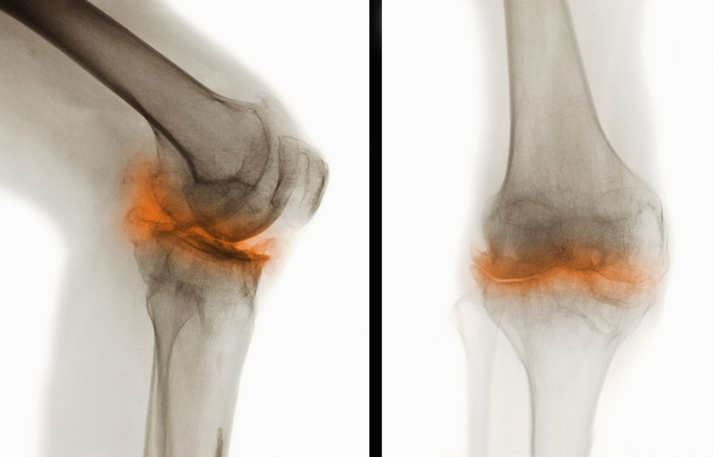

Osteoarthritis is a degenerative joint disease caused by the breakdown of cartilage in joints. You might have this if you have joint pain that gets worse with activity, joint stiffness, swelling and the feeling of grating or grinding at joint areas. If you’ve gone to see a physiotherapist already and they’ve diagnosed you with osteoarthritis, these exercises will help you feel better!
Items Needed: A soft surface (like a yoga mat or a bed) and a chair
Estimated Time: 15 min
Exercise Set:
- Supine Straight Leg Raises (10)
- Seated Knee Kicks (10)
- Sit to Stand (10)